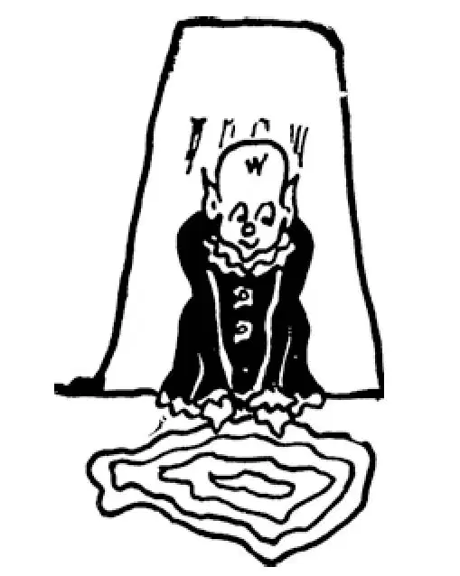

64
The Search for Gold and Adventure
寻金和探险

ALL sorts of marvelous tales were told about the wealth and wonders of the New World.
It was said that somewhere in the New World there was a Fountain of Youth , and that if you bathed in it or drank of its water, you would become young again.
It was said that somewhere in the New World there was a city called E1 Dorado built of solid gold.
So everyone who liked adventure and could get enough money together went off in search of these things that might make him famous or healthy, wealthy or wise, or forever young.
One of these men was Ponce de León , a Spaniard. Ponce de León , was looking for the Fountain of Youth . While searching for this lifegiving water, he found Florida. But instead of finding the Fountain of Youth, he lost his life in fighting with the people who already lived in Florida.
Another one of these men was Hernando de Soto. He was searching for El Dorado, the city of gold. While doing so, he discovered the longest river in the New World—the Mississippi. Instead of finding E1 Dorado, de Soto was taken sick with fever and died. Now, the Spaniards, to make the Native Americans fear them, had said that de Soto was a god and could not die. In order to cover up the fact that de Soto had actually died, his men buried him at night in the river he had discovered. They then said that he had gone on a trip to heaven and would presently return.
The first country you come to south of the United States is called Mexico. Here lived at that time a nation of Indians known as Aztecs. These Aztecs had a very advanced civilization. They did not live in tents but in houses. They built fine temples and palaces. They made roads and aqueducts, something like those of the Romans. They had enormous treasures of silver and gold. Yet the Aztecs worshiped idols and sacrificed human beings to them. Their king was a famous chief named Montezuma.
A Spaniard named Cortés was sent to conquer these Aztecs. He landed on the shore of Mexico and burned his ships so that his sailors and soldiers could not turn back. The Aztecs had never seen horses, some of which the Spaniards had brought over across the water, and they were astonished at what seemed to them terrible beasts that the Spaniards rode. When the Spaniards fired their cannon, the Aztecs were terrified. They thought it was thunder and lightning that the Spaniards had let loose.
Cortés moved on toward the Aztec capital, the city of Mexico, which was built on an island in the middle of a lake. The people he met on the way fought desperately, but as they had only such weapons as men used in the Stone and Bronze Ages, they were no match against the guns and cannon of the Spaniards.
Montezuma, their chief, wishing to make friends, sent Cortés rich gifts, cartloads of gold, and when Cortés reached the capital city Montezuma treated him as a guest instead of an enemy and entertained him and could not do enough for him. Cortés told Montezuma all about the Christian religion and tried to make him a Christian also, but Montezuma thought his own gods just as good as the Christian God, and he would not change. Then suddenly Cortés took Montezuma prisoner, and terrible fighting began. At last Montezuma was killed, and Cortés succeeded in conquering Mexico, for though the Aztecs fought desperately and bravely, shot and shell were too much for them.
In Peru in South America was still another nation of civilized Indians even more wealthy than the Aztecs. They were called Incas, and it was said that their cities were paved with gold.
A Spaniard named Pizarro went to Peru to conquer it as Cortés had conquered Mexico. Pizarro told the ruler, who was called the Inca, that the pope had given the country to Spain. The Inca had never heard of the pope and must have wondered what the pope had to do with Peru and how he could give it away. Naturally the Inca would not give up his country to Spain. Then Pizarro took it away. He had but a few hundred men, but he had cannons, and of course the Incas could not stand up against cannon.
Another people found by the Spanish were the Mayas. The Mayas lived on land that today is in Mexico and also Guatemala. The Mayas had a written language that we are only beginning to figure out how to read. They also invented a calendar and had built observatories from which to watch the stars. They built tall pyramids that remind us of the ancient Egyptian pyramids. Like the Incas, the Mayas were conquered by Spanish guns.
The Aztecs, the Incas, and the Mayas—these are only three of many native peoples that were living in America when the Spanish came. And do you know—Incas, Aztecs, and Mayas are still alive today, and you can visit Central and South America and see some of the wonderful things they built.
France and other countries of Europe also sent out explorers to conquer parts of America, and then missionaries to teach Native Americans the Christian religion, but these you will hear more about when you study American history.
Many of the explorers were really pirates, even worse pirates than the Norsemen who raided England and France, because they murdered people who were without equal weapons to fight back. The excuse they often gave for doing so was that they wanted to make the natives Christians. No wonder that the natives did not think much of the Christian religion if it taught murder of people who could not defend themselves. The Muslims made converts with the sword, but the Christians made converts with shot and shell.
【中文阅读】
关于新大陆的富有和神奇，流行着各种各样不可思议的故事。
据说在新大陆的某个地方，有一处“青春泉”，如果你在里面洗个澡或喝上几口泉水，你就能返老还童。
还传说在新世界的某个地方，有座叫黄金国的城市，整个城市是用纯金建造的。
所以凡是喜欢历险而且能够筹到足够钱的人都出发去新大陆寻找这些神奇的东西，期待自己因此而获得健康和名誉、财富和智慧，甚至永葆青春。
这其中有个人西班牙人，叫庞塞·德莱昂，去新大陆寻找“青春泉”。在寻找这赋予生命之泉的过程中，他找到了佛罗里达。但是他非但没有找到青春泉，反而和当地的原居住民发生了冲突，并丧了命。
还有个叫埃尔南多·德·索托的人，也踏上了寻找“黄金国”的探险之路。在路途中，他发现了新大陆最长的河流——密西西比河。他没有找到黄金国，却得了病，发高烧，死在他乡。西班牙人为了让美洲印第安人畏惧他们，就说德·索托是个神，神是不会死的。为了掩盖德·索托已死的事实，他的部下在夜里把他葬在了由他发现的密西西比河里。然后他们说他去天堂旅行了，马上就会回来的。
与美国南部接壤的国家被称为墨西哥。当时这里生活着一个印第安部落，叫做阿兹特克人。这些阿兹特克人有着非常先进的文明。他们不是住在帐篷里，而是住在房子里。他们建造了精美的寺庙和宫殿。他们还修建道路和类似于罗马人建的那种高架渠。他们有大量的白银和黄金。不过，阿兹特克人的宗教还处在偶像崇拜的水平，还实行人祭。他们的国王是个有名的首领，名叫蒙提祖马。
一个名叫科尔特斯的西班牙人被派去征服这些阿兹特克人。他在墨西哥海岸登陆，并烧毁了船只，这样水手和士兵们就被断了后路。西班牙人穿越大洋时还随船带来了一些马，阿兹特克人从未见过马，他们看到西班牙人骑的马大为震惊，以为它们是一种可怕的野兽。西班牙人开炮射击时，阿兹特克人惊恐万分。他们以为那是西班牙人释放的雷和电。
科尔特斯向阿兹特克人的都城墨西哥城进军，墨西哥城建在一个湖心的岛上。一路上他遇到的阿兹特克人都拼死抵抗，但是他们使用的武器非常粗陋，就像石器和青铜时代的武器一样，所以无法和西班牙人的枪炮抗衡。
蒙提祖马，他们的首脑，希望和西班牙人划地为友，送给科尔特斯丰厚的礼物 和好多车的黄金；当科尔特斯到了都城后，蒙提祖马没有把他当做敌人，而是像对待上宾一样殷勤款待，可谓无微不至。科尔特斯给蒙提祖马讲了基督教的情况，想让他也成为基督徒，但是蒙特祖马认为自己的神和基督教的神一样好，他不会改变信仰。于是科尔特斯突然发难，把蒙特祖马抓了起来，双方展开了激烈的战斗。最后蒙特祖马被杀死，科尔特斯成功地征服了墨西哥，尽管阿兹特克人殊死搏斗，但是他们毕竟不是子弹和炮弹的对手。
在南美洲的秘鲁还有一个较文明的印第安部落，他们甚至比阿兹特克人还要富有。他们被称为印加人，据说他们在城里用黄金铺设街道。
一个名叫皮萨罗的西班牙人进军秘鲁，准备像科尔特斯征服墨西哥城一样征服秘鲁。皮萨罗告诉印加的国王，教皇已经把这个国家赐予西班牙了。印加国王从未听说过教皇，一定很奇怪教皇和秘鲁有什么关系，他怎么就能把秘鲁送给别人。自然印加国王是不会把自己的国家拱手相让的。于是皮萨罗把这个国家夺过来。他只带了几百人，但他有大炮，印加人当然抵抗不住大炮。
西班牙人发现的另一个部落是玛雅人。玛雅人生活在现在墨西哥和危地马拉的土地上。玛雅人有文字，这种文字该怎么读，直到今天我们才刚刚摸出点门道。他们还发明了一种历法，并建造了天文台来观测星象。他们建造了很多高大的金字塔，这让我们想起古埃及的金字塔。和印加人一样，玛雅人也被西班牙的枪炮征服了。
阿兹特克人，印加人，玛雅人——这些部族在西班牙人来到时，只是生活在美洲的印第安部族中的三支。你知道吗，印加人、阿兹特克人和玛雅人如今还生活在美洲，你可以在中美洲和南美洲，参观他们建造的那些奇妙的建筑物。
法国和欧洲的其他国家也派出了探险者去攻占美洲的一些土地，然后又派出传教士向美洲印第安人传播基督教，不过当你学习美洲历史的时候，老师会告诉你更多这方面的故事。
许多探险者实际上就是海盗，甚至比袭击英国和法国的挪威人还要坏，因为他们把那些武器落后、无力反击的人都残杀了。他们给自己杀人经常找的借口是，他们想让土著人成为基督徒。如果基督教教人杀害无力自卫的无辜百姓，那也就难怪那些土著人对基督教没有什么好感了。穆斯林用剑逼迫人改变信仰，而基督徒用子弹和炮弹逼迫人改变信仰。
